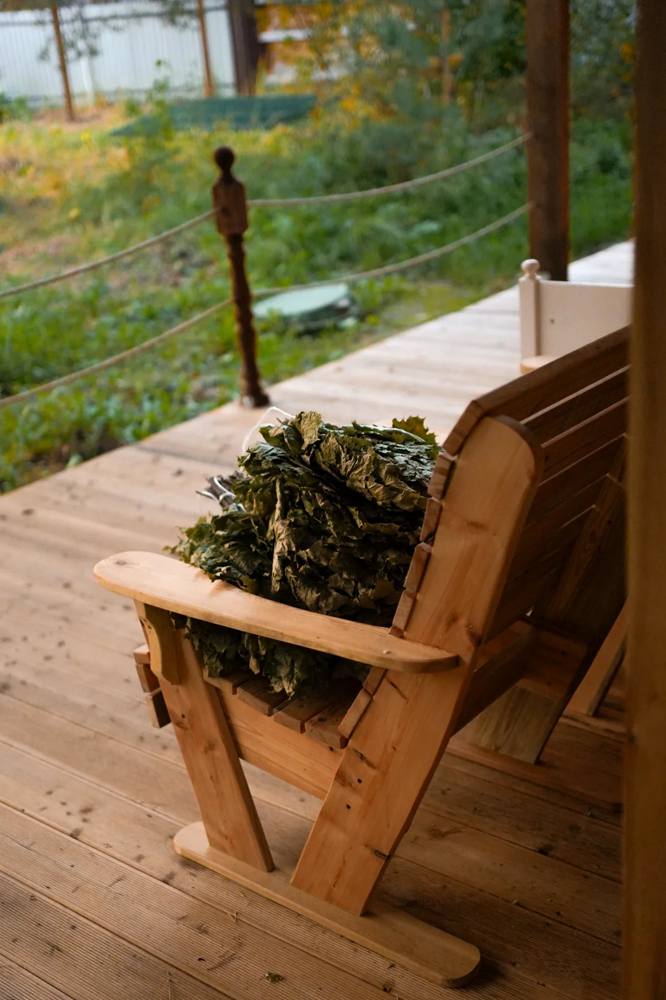

БАНЯ ПРЕДКОВ
БАНЯ ПРЕДКОВ ЗНАКОМСТВО
ЗНАКОМСТВО
Первое знакомство
Групповой формат
Банный процесс в своей компании: кленовые веники, парение, купель и знакомство с культурой «Истоти».
4–6 мужчинОколо 1 часа в парной
7 500 ₽за гостя
↗Приватная мужская баня под Казанью · Ильинский
«Истоть» — приватная мужская баня под Казанью: мягкое парение с мастером, купели и отдых без посторонних. Четыре программы от 7 500 ₽.


ЧТО ТАКОЕ «ИСТОТЬ»
Здесь не нужно организовывать баню самостоятельно. Мастер ведёт процесс, подбирая интенсивность под ощущения гостя. А пространство на время программы принадлежит только вашей компании.
Никаких параллельных компаний и случайных гостей.
Парение чередуется с водой и отдыхом. Интенсивность не обязана быть экстремальной.
Мастер остаётся рядом и сопровождает весь банный процесс.
ПРОГРАММЫ И СТОИМОСТЬ
От 7 500 ₽ за гостя до целого дня с мастером. Ценность определяется составом, длительностью и сопровождением, а не часами аренды.
ЗНАКОМСТВО
Первое знакомство
Банный процесс в своей компании: кленовые веники, парение, купель и знакомство с культурой «Истоти».
ГЛАВНАЯ ПРОГРАММА
Основная программа
Встреча и чай, подготовка, 2–3 часа работы мастера на полке, отдых и спокойное завершение.
 СЛЕДУЮЩАЯ ГЛУБИНА
СЛЕДУЮЩАЯ ГЛУБИНА
Более глубокий опыт
Более продолжительная персональная программа с парением, водными циклами и отдыхом. Ориентир основного процесса — 3–4 часа.
ФЛАГМАН
Целый день для себя
Семь циклов по 45 минут на полке с перерывами. Длительная персональная работа в течение целого дня.
* Стоимость указана за гостя, кроме флагманского формата на двоих. Для «Семичасового парения» цена за двух гостей — 100 000 ₽. Детали посещения согласуются до записи.
ТЕХНОЛОГИЯ ПАРЕНИЯ
Керамический контур, кленовые веники, парящий полок, купели и индивидуальная работа мастера. Именно детали отличают «Истоть» от обычной аренды бани.
Ориентировочная температура мягкого парения по описанию мастера. Клинкерный кирпич создаёт массивный керамический контур.
Конструкция для персональной работы мастера с разных сторон и подачи свежего воздуха к зоне головы.
Две тёплые купели около 34–36 °C и холодная уличная. Этапы и их интенсивность выбираются индивидуально.
КАК ВСЁ ПРОХОДИТ
На примере обряда «Погружение». Последовательность индивидуальна и согласуется с мастером.
Переход из повседневного ритма в спокойную обстановку.
Мягкое тепло, веники, вода и индивидуально подобранная интенсивность.
Время полежать, побыть в тишине и никуда не спешить.
Чай и возвращение к обычному дню без резкого переключения.
ПРОСТРАНСТВО И ДЕТАЛИ
Здесь реальные фотографии пространства и деталей, которые встречают гостей.
Это настоящие фотографии пространства «Истоть». Чтобы почувствовать разницу, важны не декорации, а сам процесс: мягкое тепло, вода, отдых и персональная работа мастера.
Больше фотографий в Instagram ↗
ФИЛОСОФИЯ
«Через тело к голове.
Через голову к душе.»
В «Истоти» не нужно соответствовать чьим-то ожиданиям. Можно просто быть собой: без должностей, звонков и чужих взглядов.
Обсудить посещениеЛЮДИ И ПОДХОД
Айрат — владелец «Истоти». Здесь важна не аренда помещения по часам, а подготовленный процесс с вниманием к гостю.
Согласуем формат, стоимость, длительность и число гостей. Можно задать вопросы о температуре, купелях и ходе программы.
Мастер работает с парением и подбирает интенсивность с учётом ощущений гостя. Пространство закрыто для посторонних.
Показываем реальные фотографии места, не вымышленные интерьеры. Посмотреть пространство и узнать об устройстве парной.
ОТДЕЛЬНОЕ НАПРАВЛЕНИЕ · В РАЗРАБОТКЕ
Не просто привести сына в баню, а провести баню вместе с сыном. Совместные действия, знакомство с банной культурой и возможность услышать друг друга. Формат ещё не запущен: возрастные ограничения, безопасность, состав программы и условия участия разрабатываются.
О концепции клуба ↗ПЕРВЫЙ ВИЗИТ
Перед приездом согласуем программу, число гостей и время. Халаты, тапочки и банные принадлежности предоставляем на месте. Пространство будет только для вашей компании.
Обсудить первый визит ↗ПОДАРОЧНЫЙ ФОРМАТ
Возможность подарить банный опыт вместо очередной вещи. Условия оформления и использования сертификата уточняются при обращении.
Обсудить сертификат ↗ЖУРНАЛ ИСТОТИ
Ответы на вопросы, которые возникают ещё до первого визита.
Почему здесь важны не часы аренды, а работа мастера, этапы и внимание к гостю.
Читать статьюЗачем чередовать тепло, охлаждение и отдых, и как выбирают интенсивность процесса.
Читать статьюКороткий практический гид: что брать с собой, как устроено посещение и чего ожидать.
Читать статьюРитм работы мастера вместо соревнования на силу.
Читать статью ↗Тёплые и холодная купели, индивидуальный ритм.
Читать статью ↗Сравните четыре формата без обещаний чудес.
Читать статью ↗ВОПРОСЫ ГОСТЕЙ
Керамический контур из клинкерного кирпича, мягкий режим парения 36–48 °C по описанию мастера, парящий полок, кленовые веники и персональная настройка процесса. Подробнее о технологии.
В центре формата — работа мастера. Айрат, владелец «Истоти», объясняет философию проекта. О подходе мастера.
Нет. Пространство закрывается под гостей конкретной программы.
Банные принадлежности, включая халат, тапочки и веники, предоставляются. Еду и напитки с собой приносить нельзя.
Время зависит от программы. Например, обряд «Погружение» занимает примерно 4–5 часов с учётом отдыха и чаепития.
Да. Позвоните или напишите в Instagram, мы объясним различия программ и уточним доступность посещения.
Пестречинский район, посёлок Ильинский, улица Дубовая, 24. На странице контактов есть ссылка для построения маршрута в Яндекс Картах.
Нет. В стоимость входит выбранный банный процесс с сопровождением мастера. Длительность и состав зависят от программы.
Специальное направление «Отец и сын» пока в разработке. Возраст и условия участия ещё не утверждены.
ЗАПИСЬ В ИСТОТЬ
Расскажем, чем отличаются программы и что входит в посещение. Выберите удобный способ связи: телефон или Instagram. Дату и детали согласуем лично, без форм и регистрации.